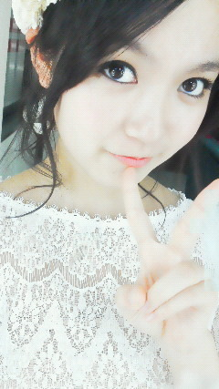

返回列表-BACK TO INDEX
今日は撮影です!遠征なの!
いつものひめたんじゃない顔をみなさんにお見せできるかな(^^)
何の撮影かって?まだ秘密。
衣装見せてって?まだ秘密。
ふふふー♪
意地悪してるわけじゃなーいのっ☆
今日は生涯で一番高いヒールを履きました。
ひめたんがヒールて!
うんがんばりましたよ♪
明日は個別握手会in名古屋☆!
名古屋でイベントも初めてじゃし、個握も初めてじゃし。
今から楽しみすぎるよっ(^ω^)いっぱいお話しようねっ
行くよーって方は気をつけてきてね!
待ってましゅりん


わら
 ひめかサンプラーの使い方教えてもらっていいかな?
ひめかサンプラーの使い方教えてもらっていいかな?ひめかサンプラーってなんですか? 握手会で話すネタがないときに使ってくださいな(*^ω^*)
ひめたんの好きなものを想像して、コールしてください。
あなた......あ
ひめたん...ひ
あ「ひめたんサンプラー!○○○!」
ひ「好き!」
あ「●●●!」
ひ「嫌い!」
こういった感じ。
ひめたんて呼ぶの恥ずかしいわ笑どしたらいいかね?笑 頑張って呼んでひめきゅんでしょっ(o>ω<o)♪わら
どうしても無理なら...おまかせしますよ?
握手会の時ってファンレターとかプレゼントとかって渡せるんですか? ...というか渡して良いのですか?
全然渡して良いのですよ!
ひめたんお手紙大好きだよ♪
ありがとうございます(∀)
俺は基本MDの上に単推しの他メンバーがいるけれど、 そんな俺に「ひめきゅん」を名乗る資格があるでしょうか?
ひめたんにきゅんってした人はもれなくひめきゅんさんになります(*・ω・*)!
短くてごめんね←
明日に備えようかしらしゅりん?
あしゅーっ

!!!
ひめたん(*´・ω・*)
2012/03/24 01:06｜
かわごってぃ(川後陽菜chan)お誕生日おめでとう!
かわごってぃとは一緒に年越しした仲です(。・ω・。)好きやねん
川後のツンデレ可愛いの!
たーまーに甘えんぼさんされると「萌(^^)」ってなるの。
14歳だってね?
昨日まで13歳だったの?
大人ぽすぎるやろー!
といいつつ中身はぴゅあな14歳で間違いないっ♪
てか昨日ブログ投稿した直後くらいに携帯フリーズした!
でも生き返ったみたいよかったよかった(//ω//)
 誕生日なんだよ!今日!
誕生日なんだよ!今日!お誕生日おめでとうございます(∀)うぇーい♪
かわごってぃと同じじゃないですか!
何歳になったのー☆?わら
いくつになっても誕生日って嬉しいですよね。
 ひめたんはいつも誕生日は何ケーキ?
ひめたんはいつも誕生日は何ケーキ?毎年違うけど、共通して言えるのは
フルーツとか乗ってる爽やかなケーキよりも
「ざ☆生クリーム」みたいなのが多いっちゃ多いかな。
クリームて可愛いよね(*^^*)
クリームの可愛さ。伝わる?
 ひめたんは女の子の3姉妹みたいだけど、
ひめたんは女の子の3姉妹みたいだけど、兄貴or弟にするなら芸能人では誰が良い?
設楽さんなみたいお兄ちゃんステキだと思う!
じゃ弟は日村さんかと聞かれると...。
弟(。・ω・。)?
SME乃木坂ビルにも近いお店ラーメン『千成(せんなり)』。 ひめたん、そこのラーメン屋さんはご存知ないよね?
千成。残念ながらご存知ないです('・・)
今度乃木坂行った時は食べてみまそ♪
 俺ラグビーやってたんだけどラグビーやってた人とかってどう思う?
俺ラグビーやってたんだけどラグビーやってた人とかってどう思う?かっこよす(*^ω^*)
ラグビーのボールって可愛いよね。変なとこ飛んでくよね。
あのボール使いこなせるの、ひめたんできないよ憧れますよ♪
 ひめたん的に乃木坂メンバーでオシャレだと思うのは誰?
ひめたん的に乃木坂メンバーでオシャレだと思うのは誰?ななせまる(西野七瀬chan)は相変わらずおしゃれ(*^^*)
好みは違えどみんなおしゃれですよ!
いこまっち(生駒里奈chan)はボーイッシュな感じだったり
べびたん(伊藤万理華chan)は古着ちっくなラフスタイルとか多いかな。
みゅみゅ(若月佑美chan)はジャンルに富んでます。何でも着こなせるってステキ!
え?ひめたん?
ひめたんの私服てどんなのかしら。
秋くらいまでは「いつもアイドルって感じの服着てるよね!」なーんて言われてたけど
冬の寒さに耐えかねて最近は「温かきゃ何でもいいー(>_<)」てなってたかもしれー
可愛さに欠けるよね。
また春になったらアイドル性求めてみます♪
逆に甘えん坊のひめたんに甘えてくるメンバーっている? ん〜〜〜〜〜ななせまる!
甘えるってかぎゅってしてくる∪・ω・∪
女の子はシャーベットカラーがはやるとかいううわさだけど、 春は男の子がどんな服を着とったら「いいな」って思う??
ひめたんのセンスに任せちゃっていいの(*'-ω・*)?
まとりあえず爽やかな感じだとステキですよね。
 買い物は乃木メンは原宿か渋谷が多いみたいだけど、
買い物は乃木メンは原宿か渋谷が多いみたいだけど、ひめたんはどのあたりに遊びに行く事が多いのかな?
そうだねー。
今までメンバーと一緒に遊んだのはやっぱり渋谷とか多いかな。
ひとりだったら駅地下とかアトレとか散策するだけで満足(ω)☆
あんまりにぎやかな所いくと「あらひとりじゃん...」て寂しくなってくるからね。
 英語とか地歴みたいな文系の教科は得意なの!?高校の宿題は終わってる?
英語とか地歴みたいな文系の教科は得意なの!?高校の宿題は終わってる?文系はまあまあできる。国語なんか得意(^^)!
国語はひめたんに聞いてくださいませ。
高校の宿題...。
まだもらってないんよね。怖い怖いっ。
 ひめたんの地元大先輩って誰ですか?やっぱりパフュームさん?
ひめたんの地元大先輩って誰ですか?やっぱりパフュームさん?僕は奥田民生さんが大好きです!知ってるかしら?
やっぱりPerfumeさん(*/ω＼*)
奥田民生さんもちろん知ってますよ。
携帯で「おくだ」って打った「奥田民生」さん出てきた!
3日間かけてひめたんブログをその1から全部読んだので、 そろそろ中元日芽香推しを名乗っていあでしょうか...(>_<)??
お疲れさまでした!
ぜひぜひ名乗ってくださいな(^^)
囲みに、ひめたんにきゅんってした人のことひめきゅんさんって呼んでんの。
恥じらいなんて捨てましょ?
 ひめたんの得意料理教えてくださーいo(^o^)o
ひめたんの得意料理教えてくださーいo(^o^)o得意料理とか言う前にそもそもお料理が苦手なのだけれども←
お好み焼きとかなら作れる...。
ひめたん(*´・ω・*)
2012/03/23 01:12｜
写メね。写メないわ。
もっとストックがなきゃだめね。反省しました←
携帯のデータフォルダから引っ張りだしてきましたどーん。
『失いたくないから』

よお考えたらコメ返が全然追い付いてなかったーうっほい(・o・ノ)ノ!
ゆーわけでいろいろお返事書いたので見てね♪
まっはコメ返がしばらく続く予定ですお楽しみに☆
日記をさくっと書くと
れっすーん(o>ω<o)
もう新曲のダンス習ってるんだよ素敵でしょ?
左胸は下半身がぴきぴきするんだけど、新曲は上半身が悲鳴をあげてます☆
2曲続けて踊ったら、いい筋トレだと思われる。
どっちも好き!
いっちゃん最初のはタイムリーなコメ返♪
 ひめたん17歳になったよ///
ひめたん17歳になったよ///わーお誕生日おめでとう!
華のせぶんてぃーんデビューだね(//ω//)
響きかっこいいなあ。せぶんてぃーん!
ケーキ食べた?ローソクは17本さしたのかしら。
 握手会で覚えてるって言ってたけどホント?若干怪しかったけどな〜。
握手会で覚えてるって言ってたけどホント?若干怪しかったけどな〜。にゃ。
お名前とお顔が一致するにはどうも時間がかかるようで(・∀・;)
お名前聞いたら「あっ」てなるし
お顔みたら「あっ」てなるのですよ。ここまで事実!
完璧に覚えるまでひめたんに時間をくださいな?
ひめたんショートカットにしたことある?いつぐらいからその髪型なの? それがショートは生まれてこの方一回もないですー
一番短くても肩にはついてたと思う(^^)
今の髪型は8月のオーディションから変わってないですよ!
お魚の質問キター(・∀・)ー!
魚は食わず嫌いですか?うなぎは好きですか? お魚さんの中には食わず嫌いの子もいると思う←
骨がないとまだ食べれるんだけどね。お刺身とかお寿司とかね。
煮魚さんはなんか苦手。
うなぎさんは小骨が好きくない...(。・x・。)ごめんね好きになるから←
強いて言うならまだ一番好きな魚は?? お刺身とかだとサーモン好きっ∩^ω^∩☆
鮭フレークなんかはのりたまとおんなじくらい好き。
ご飯のおともだよっ
魚介類、海老とかカニ、なんかは大丈夫なのかな? あーシーフード系はさらに苦手。食べれませんカニみたいに食わず嫌いの子もいるけど。
えび、生のえびは怖くて食べたことないけど
フライにしたら美味しいよね(//ω//)えびふりゃー。
たこ焼き食べれる? たこ焼きのたこは最近食べれるの!ほんと最近。今年の1月の話。
それまではたこ抜いて「焼き」食べてた(ω)
焼き。美味しいってばよ♪
広島ラブのひめたんがカキもダメなんてことはないですよね? あーそれはないので安心してくださいませ(^ω^)
カキは美味しいよね。広島のカキ、みなさんにもぜひ食べてきただきたい!
もしどこでも好きな所に行けるとしたらどこに行きたい? 夢の国っ(*/ω＼*)!
...ディズニーランドに行けばいいのかしら。解決しちゃったわ。
あでも遊園地とか行きたい♪
あんね、よみラン行った時、いろんなアトラクションに乗りたかったんよー。
じゃけ今度みんなで行こうねって話になりました(^ω^)
ひめたんのパジャマはどんなかんじですか? ぴんくのもこもこ♪
パジャマにぽっけがついてたら何気に便利だよね(^^)
 ひめたん髭もしゃな男はどう思う!?
ひめたん髭もしゃな男はどう思う!?わいるど。だんでぃ。
似合ってる人かっこいいと思いますよ(*^^*)ぽ
使ってるケータイは何ですか??出来るだけ詳しくお願いします(^^)/ ぴんくのぱかぱか。
ぴんくゆーのは濃ゆいぴんく。
ぼたんがおっきいのでメール打ちやすいです(・c_・*)ぐっじょぶだよね!
ただね、扱いが乱暴ってことでは決してないんだけど電池が全然持たないの!
るんるん(斎藤ちはるchan)に相談したら
電池の充電の頻度はスマホ並らしいです(*゜∞゜)ノくるっくー
 東京の個別まで長い〜ひめたん元気になる言葉をくださいw
東京の個別まで長い〜ひめたん元気になる言葉をくださいw長いよねーそれひめたんも思うよ長いんだよ!!
とりあえずぶろぐでも読んでひめたんとお話してると思いましょ
ってもう読んでるか(^^)
これからも読んでくれそん
あクレソンって葉っぱ知ってますかー?
この前るんるんとクレソンについて語り合ったからね。
クレソンで盛り上がれる人なんです私(*^^*)
握手会で話題なかったらクレソンの話でも振ってくだ...さ...
話を戻そう。次。次やー♪
 ここぞというときに日芽香は何をしますか?
ここぞというときに日芽香は何をしますか?髪型の話ですよね。
♪ぽーにいーてーる〜かしら(^ω^)
ひめたん私服の時はポニテ好きなんです☆
だけどね、自分ではできないから普段はしないの。
でもお出かけしますよって時そばにままがいたらポニテしてもらいます♪
ひめたん(*´・ω・*)
2012/03/22 00:48｜
昨日は励ましのメッセージありがとうございました!
ひとつひとつ読みました。
読むってより、お言葉を聞くって感覚だったかなっ
ふぁみりー。いい響き(^^)♪
それで、とにかくぶろぐは突っ走るって決めたので
これからも更新がんばります(`・・)!
みなさんが遊びに来るの待っとるよー☆
あ。
もっと素直になりなさい?って言ってもらえたので
たまには直球どストレートに書くのもいいかなって思った(*^ω^*)
直球すぎて受けとめられないときは危険なので逃...
いや頑張って受けとめてください

わら
あといっこ思ったのがね
間違い探しの正解を発表してなかった(・ω・)!
けど前の記事に発表するのはさすがにだめかなーて空気をよんだ結果、
今から発表するよー♪
ん?
「間違い探し」「間違え探し」どっちだろ('・・`)←
まとりあえず発表するよー♪♪
って言うまでもないよね。
「HIMEKAWA」さんじゃないからね。
いや間違い?え?探しにするような問題じゃないじゃないかって。
答えが1っなんて
誰も言ってなーい(o>ω<o)!
ひっかかったしょ?
ひっかかったよねー?
実はタイトルの顔文字がいつもと違ったんだよ(*´・ω・*)
...。
てのはたまたまひめたんが打ちまつがえました←
ま、まつがえいっこやないやんっ(・o・ノ)ノ!
てあとから気付きました。
ちーん。
HIMEKAWAさん指摘した方が正解ですひねくれてごめんなさい。
しかもね、これは間違い?え?とかじゃないけど
記事の書き出しにおむすびついてたの。
えっと...。
記事におむすび貼ったのひめたんじゃないよ?わら
投稿した記事にはおむすびなんかなかったもん!
記念におむすびでこめ保存したんだけど
ひめたんの携帯は表示してくれんかった(;'`)
おむすびどこから来たのおむすび...。
きっとこれが「おむすびころりん」だよね(^-^)!
ひめたんすごいよ童話の世界を体験しちゃったよ高山ったよー!!!
ということにしておきます。
信じてないでしょ?
ほんとだってば!
質問ありがとうっ!
 フード隊のラストやってんけどちゃんと覚えてくれてるかな?
フード隊のラストやってんけどちゃんと覚えてくれてるかな?ああ可愛いらしいフード隊のみなさま(*^^*)
覚えておりますよ!滋賀だよね?あってるよねー?
 ひめたん!!!!3月のカレンダーお願いします♪♪
ひめたん!!!!3月のカレンダーお願いします♪♪遅くなりすぎましたごめんなさいーいいぃ!
...なんか上手い具合に貼れない←
画質粗いよーなんでー?
きれいに貼れるようになったらまた再アップします!
それまでこの小さいカレンダーで我慢してー(;'∩`)
ひめたんの私服はLIZLISA? よくわかりましたね!
LISLISA可愛いよね(*^^*)ひめたんLISLISAのワンピ好きだよー♪
ひめたんそいえばさゆにゃん(井上小百合chan)とみゅみゅ(若月佑美chan)と
何かおそろいのLISLISAグッズ持ってんの!
次のシングルの握手会から絶対福岡から行くから待っててくれるかな? ほんまにー(^ω^)♪
そりゃもちろん嬉しいけれども、無理はせんでね?
福岡行きたいなあ。でも一回イベントで福岡行ったんだよな。
また行けるかしらー?
乃木坂の誰かがおじゃましたらよろしくお願いしますねっ☆
 この富山弁わかる?「だら」「〜せんなん」「だいて」
この富山弁わかる?「だら」「〜せんなん」「だいて」だら→だよ
〜せんなん→〜しようよ
だいて→だだだだ抱いてっ


わら
にゃー完全に勘ですこれ。わっからーん!
人気のあるお好み焼き屋さんを教えて下さいな? 広島人はおうちでお好み焼き焼いちゃいますので
そーゆー情報にはうといっちゃうといけど...
前にイベント行ったときにお邪魔した「あとむ」さん!
お好み村の4Fにあるんだけれども。
美味しかったよー♪
有名人さんもたくさん食べにいらしたって聞いたし(^^)
さゆりんご(松村沙友理chan)ななせまる(西野七瀬chan)
ろってぃ(川村真洋chan)とひめたん4人でサインも書いたしね♪
ひめたんは、グアムに行ったことある? なっしんぐ('`)←
楽しそーう行きたーいけど飛行機が怖ーい。
けどやっぱし行きたい!
誰か連れてってください☆
ひめたん(*´・ω・*)
2012/03/21 00:00｜
乃木坂ってどこ?
2ndシングル選抜メンバーが発表されました。
選ばれなかったこと
ごめんなさいの言葉
もちろんみなさんに一番伝えたいことではありますが
それは単なる結果報告と言い訳に過ぎないような気がするので
今回はこの2ヶ月間を振り返ってみようと思います
この2ヶ月間、いろいろと考えさせられることがありました
乃木坂46の今とか、今後とか
アンダーの存在の価値とか
アンダーである自分の存在の価値とか。
選抜のみんなはいつも
「33人で乃木坂46だよ」って言ってくれるのは嬉しい
だけどやっぱ
実際には選抜メンバー16人に入らなければ意味がないんだな、とか
アンダーである私は選抜メンバーが不在の時にしか必要ないのかな、とか
自分たちの冠番組に呼んでもらえることに喜びを感じるなんて情けないな、とか。
ティッシュ配りをしてて、選抜16人がプリントされたティッシュを女の子に渡したときに
「お姉ちゃんどこ?」って聞かれて
「この中にはいないんだよ」って答えるなんて
それでも私は乃木坂46の一員なのかな、とか...。
悩みました。
腐りました。
長い2ヶ月間だったと思います
すべて解決できたわけではないけれど、
でも悩んだからこそ見えた課題というのもあります。
私は、ダンスが大好きです。
だから、いつも全力で、笑顔で、ヘトヘトになるくらいに踊っていました
でもそれじゃだめなんですよね。
ぐるぐるカーテンをきれっきれで踊ったら、曲の雰囲気はぶち壊されてしまう
可愛らしい女の子らしい歌詞の意味やメロディを伝えるのが大事なのに
私1人意味を理解しなかったがゆえに
全体のクオリティにまで悪い影響を与えてしまう
よみうりランドのステージでの反省です。
あのときは「楽しかった!」で終わった
だからだめなんですよね。
ぐるぐるカーテン
もちろん全員に言えることだけど、特に選抜のみんな
初めて自分たちのために書いていただいた曲だから
きっと何度も何度も歌詞を読み込んで
ダンスだってたくさん練習して
やっと乃木坂46のパフォーマンスとして成り立った曲
それぞれに大切な思い入れがあるんですよね
それが私には足りなかった。
任された時、もっとぐるカーの曲についていろいろと飲み込むんだった
単純に嬉しかったんです
なかなか日の当たることがない私にとって、絶好のチャンスだと思った
遠くの人にまで見てもらわなきゃって、そんなことしか考えてなかった
だからだめなんですよね。
もっとチームを意識する
乃木坂46みんなが1っになってきれいなものを作るんだって。
個性が勝っちゃいけない。
難しいところですよね。
でもそれが理解できない人がアイドルって名乗るって
そんなに恥ずかしいことはないんだなと思いました。
全員仲が良いことに変わりありません
ただスケジュールの差から、アンダーのみんなと一緒にいることが多くなりました。
選抜組がドラマの撮影に出かけた中、
アンダーのみんなで6時間ひたすら乃木詩を練習し続けたことがあった。
選抜組がテレビ収録に出かけた中、
アンダーのみんなで夜な夜な語らい合ったこともあった。
この2ヶ月間、いろんな思いを共有してきました
みんな普段は口に出さないけど、感じてるんです
自分の置かれた立場とか、もどかしさとか。
それぞれいろんなもの犠牲にしてここにいるのに、
歯車が噛み合わないって感じたときとか
情けなくなるんです
悔しくて、先が見えなくて、
でも今の自分にはどうすることもできなくて...
虚しくなってくるんです
だけど、自虐に走るだけで終わらないんですよね
「応援してくださってるファンのみなさんに頭が上がらない」
「早く握手会したい」
「こうしてみんなで話してる間にも、選抜のみんな頑張ってるんだよね...」
ファンのみなさんの存在とか、
メンバーの存在とか、
絆が濃く濃くなってきているんだと思います
その証拠に、みなさんの声援に応えられないのは辛いし
そのいらだちをぶつけたくても、メンバーには当たれない...
こんな事を考えながら、アンダーのみんなは日々葛藤を繰り返してるんです
だからこそ、アンダーの仕事がまわってきた時は本当に嬉しい
イベントに呼んでいただいて、自分の存在意義というか、
そんなことを感じられるのが嬉しいんです
せっちゃん。
せいたん。
ゆみ姉。
この2ヶ月、一緒に悔し涙を流しながら頑張ってきた3人。
おめでとう。本当におめでとう(^^)!
番組を見ていただいた方、気付きましたか?
3人の名前が呼ばれた瞬間、3列目から歓声が上がったのを。
これからも、最後列で踊る私たちの悔しさを忘れずに頑張ってくれる
スケジュールとか過酷になってくの大変だと思うけど、
忙しいことが幸せなことなんだって誰よりも知ってると思うから。
そう信じています
そして、こんな私にもひとつだけ誇れることがあります。
ブログ更新。
ここ2週間くらい頻度がぐだぐだだけど
2ヶ月間、ブログだけは突っ走ってきました。
いつも3日坊主で気分屋で継続って熟語が本当に似合わない人なのですが
ブログは日課になってきました!
曲を披露させていただける機会が増えたり、地方をまわってみたりで
そのたびにブログにも足を運んでいただきました
ありがとうございます(*^^*)
コメント読むの、ひめたんの原動力です。
ごはん食べるのとおんなじくらい、コメント読むの大切なの!
ただ、ファンのみなさんのこと信用しているんだけど
いつもは考えてること素直に吐き出したりしなくてごめんなさい。
負けず嫌いだからいつもは弱音とか書きたくない人だけど
今日だけはみなさんに甘えさせてください
そして喝を入れてくださいもっと頑張れよ!って。
前回の選抜発表後のブログのコメント、とっても嬉しかった。
ひめたんには僕たちがついてるよ、もう一度頑張ろうよ、なんて
もう家族以外の何でもないじゃない!
一般的に使われる「ファン」という言葉は
好意を持っていただいて、応援してくれる人を指しますよね
でも、私たちは「ファミリー」だから。
辛いとき気持ちをわかちあってくださったり、嬉しいとき一緒に喜んでくださったり
もうただの家族じゃん!
そんなたくさんのふぁみりーのみなさんに愛されている15歳、
幸せです。
ありがとう。
こんなことしか言えないけど、いつもありがとう。
これからもひめたんらしく成長していくから
どうかビデオカメラに成長記録を収めるお父さんお母さんのように
正解するまで問題を解き直す妹を そばで見守るお兄さんお姉さんのように
少し時間がかかっても、温かく見守っていてください。
ただ、こんなこと言っちゃいけないのわかってて言いますが
今はまだ、選抜に入るタイミングじゃない。
正直な気持ちです。
もちろん入りたいけど
これから進学して、新生活でいろんなこと吸収して落ち着いてから
もう一度冷静に周りを見る、
そのための時間を与えてくださったのだと解釈します。
そして美を磨きなさいと。
今まであえて公表しなかったのですが、それも一種の逃げってやつですよね。
ダイエット宣言。
今度ひめたんに会った時に何も変わってなかったらビンタしてください。
目標は-5キロ。頑張ります。
前回の選抜発表後のブログの内容を覚えていますか。
あのときは東京タワーの一番遠くから通っていました
今は違います
東京タワーの輝きをお家の窓から見ることができる
あのときは進路がぐらぐらして悩んでました
今は違います
目の前にはもう春からのレールが敷かれています
みんなと同じ条件になりました。
もう「日芽香は参加できなくても仕方ないよね」なんて言わせません
し逃げ道もありません
駆け上がるしかないってことですよね。
...で結局、このブログであなたは何を伝えたいの?と。
あーもう全然文章まとまらない!
要するに、
この1stのアンダー期間は決して無駄ではなかったよって報告と
学んだ結果、みなさんの大切さを改めて感じましたって感謝の気持ちと
これからも頑張るねって決意表明。
一期一会。
みなさんに出会えて本当に幸せです。
いつもありがとう。
スタートしたばかりの2nd期間
また長い長い葛藤の日々が始まります。
ひめたん(*'・ω・*)
2012/03/19 14:42｜
返回列表-BACK TO INDEX